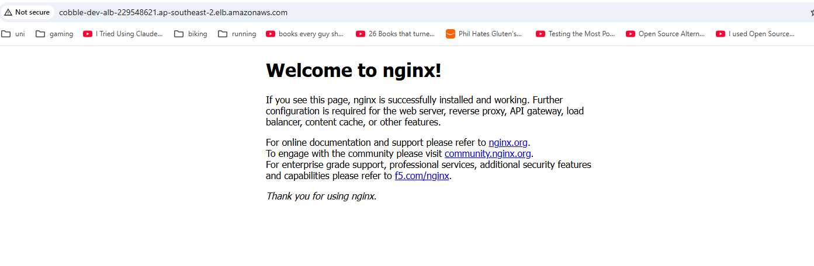
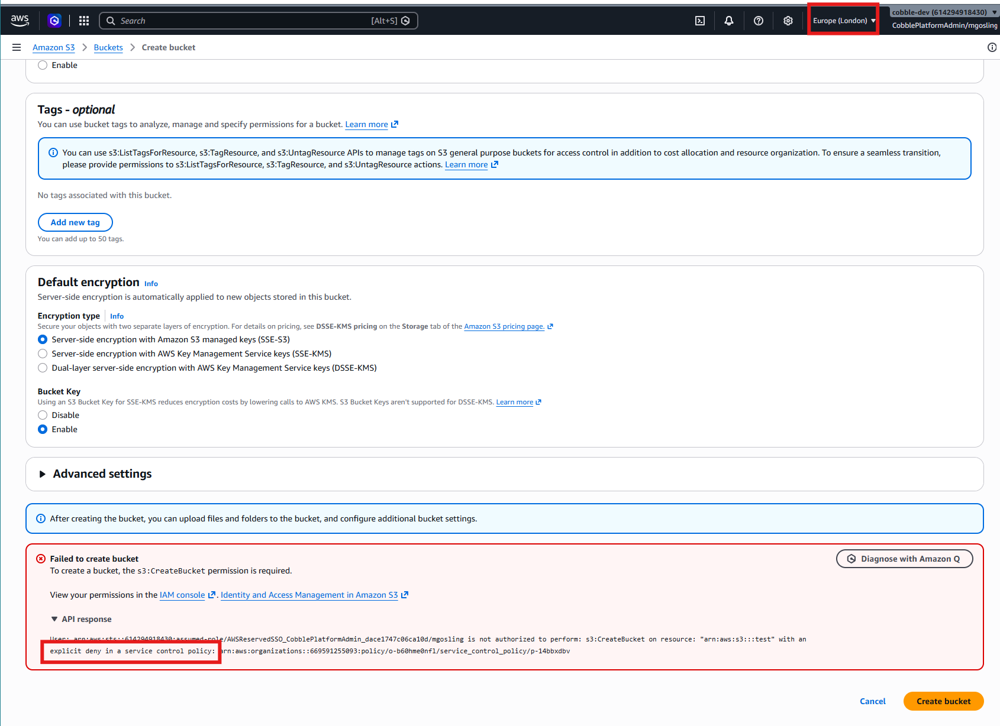
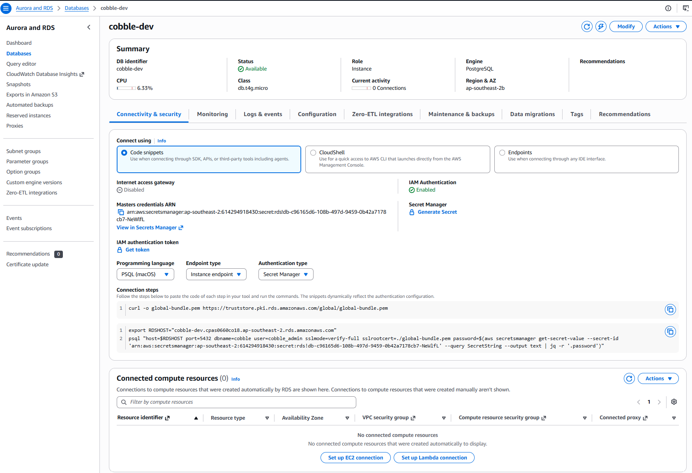
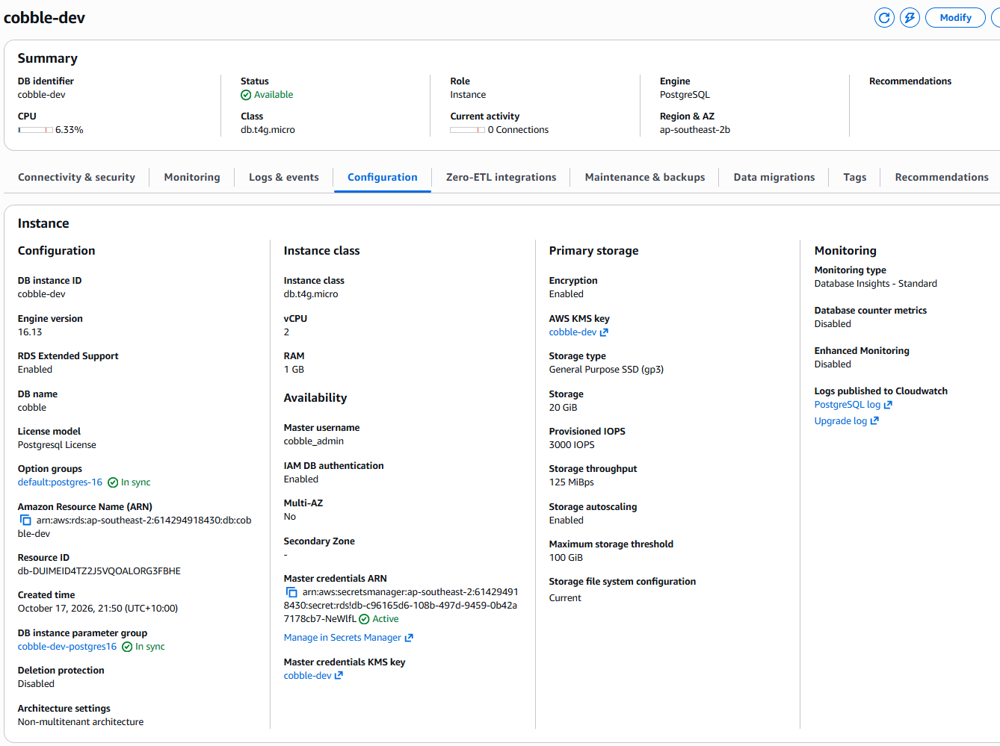
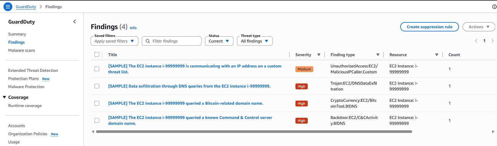
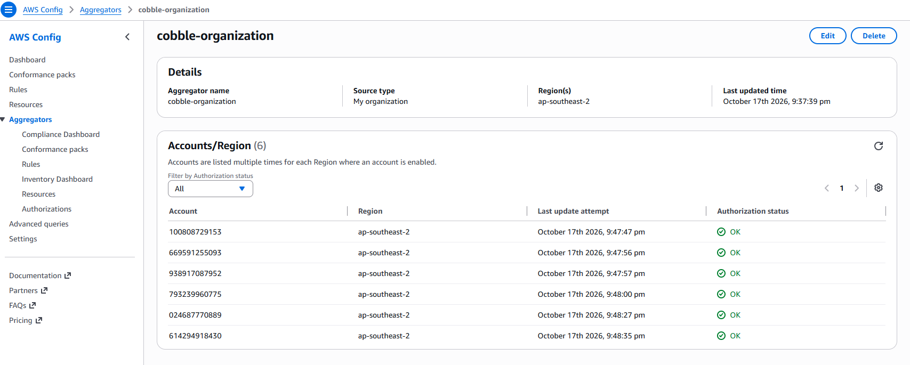

COBBLE AWS PLATFORM
A multi-account AWS landing zone and proof of concept for the Cyber Security Centre
QUT · IFB398 · P608 / R014.1
Team T235
Industry partner: Cyber Security Centre
Jacob Hardcastle
Definition
Tim Hartmann
Design
Max Gosling
Demo and plans
Khai Do
Operations
Many tenants share one platform, so a weak base exposes all of them at once
The Implementation Guide sets the target: 17 sections, from landing zone to runbooks
It has to be repeatable: deployed, torn down and rebuilt the same way every time
The secure AWS base Cobble runs on: accounts, network, sign-in, logging and security controls, all written as Terraform.
“
A platform you can deploy and redeploy with confidence.
The project goal, from our README
Working today
≈ A$0
What the Cyber Security Centre would run
≈ A$790 / month
Every tenant shares the servers, database and storage
A stolen admin session could change anything
Anything public can be attacked or flooded
Tenant data must stay encrypted and in Australia
Losing a zone, an account or a backup must not lose data
Sydney only, plus us-east-1 for global services
Member accounts’ root users are blocked
CloudTrail, GuardDuty, Config, Security Hub and Access Analyzer can’t be turned off
No account can remove itself from the organisation
| Group | Mgmt | Security | Shared | dev | staging | prod |
|---|---|---|---|---|---|---|
| Platform admins | Admin | Admin | Admin | Admin | Admin | Admin |
| Developers | None | None | None | Developer | Read-only | Read-only |
| Auditors | Read-only | Read-only | Read-only | Read-only | Read-only | Read-only |
No IAM users in Solution A
Developer and read-only last 8 hours
One can only look; one deploys after review
Enforced: a guardrail stops anyone turning it off. Configured: built by the code; an admin could still change it.
| The Guide says | We built | Why | Revisit when |
|---|---|---|---|
| SQL Server | PostgreSQL | Far cheaper at small sizes; same security controls | The client confirms the edition |
| CloudFront + API Gateway | Load balancer + web firewall | No domain name or API routes exist yet | The domain and routes exist |
| Kubernetes (EKS) | ECS on Fargate | No servers or cluster upgrades for a small team | Cobble needs something only Kubernetes offers |
| Log Archive + Security Tooling accounts | One Security account | Half the fixed cost, same separation | Production scale, or an auditor asks |
Deployed from code, shown in the console, torn down the same day. Fallback: the evidence from our run on 17 October.
Organisation, five accounts, guardrails, sign-in
Org trail, GuardDuty, Config, Security Hub
Network, containers, database, data bucket
Destroyed from code, accounts closed

The only thing on the public internet
Private subnets, no public IP
Stands in until the Cobble app exists

Signed in as CobblePlatformAdmin in cobble-dev
Creating a bucket in Europe (London)
Refused: explicit deny in a service control policy

Password kept by AWS in Secrets Manager

With the account’s own cobble-dev key


A sample threat finding, raised and seen centrally
All six accounts reporting OK
$ terraform apply org-destroy.tfplan
Apply complete! Resources: 0 added, 0 changed, 34 destroyed.
$ aws organizations list-accounts
cobble-dev · staging · prod · security · shared-services → SUSPENDED
A$790 / month, all environments
A$475 / month, dev and staging off when idle
Design and documents
Architecture, landing zone, controls, operations, threat model, compliance
Technical build
Terraform modules, both solutions, CI checks, runbooks and evidence
Every deliverable is an issue: 17 issues, 18 pull requests, 76 commits
Branch → pull request → automatic checks → one approving review → merge
Copies of the same code would drift apart, so B is built from A’s modules
Half the fixed cost of AWS’s two-account split, with the same separation
The Guide recommends EKS only when the team can run Kubernetes day to day
Rebuilding from code proves it’s repeatable, and keeps the bill near zero
Tenants are kept apart only by the application
Fix: a database user and role per module
One stolen admin session can change anything
Fix: narrower roles and a break-glass role
No copy outside the account they protect
Fix: AWS Backup to another account and region
| Framework | Where the design helps | Not covered |
|---|---|---|
| NIST CSF 2.0 | Strong on Protect and Detect | Policy, training, supplier risk |
| Essential Eight | Maturity Level 1 within reach | Staff devices, owned by client IT |
| ISO/IEC 27001:2022 | Technical controls covered | People, physical, supplier controls |
| SOCI Act | Locked trail supports 12/72-hour reporting | No written reporting procedure yet |
Evidence was captured late. Screenshots taken after the demo showed setup gaps we hadn’t checked: GuardDuty and Security Hub membership.
The landing zone needed retries to deploy in order. A scripted, tested run-through earlier would have caught both.
Next time: capture evidence as each step runs.
Both solutions deploy and tear down from code
Every change checked and reviewed
Eight deliverables drafted
Phase 2 gaps named and sequenced
Decisions needed: recovery region, SQL Server edition, recovery targets
Thank you
Everything shown is in the repository
Terraform, runbooks, the eight deliverables and the demo evidence
github.com/G-0Z/IFB398---Cobble-AWS---T235